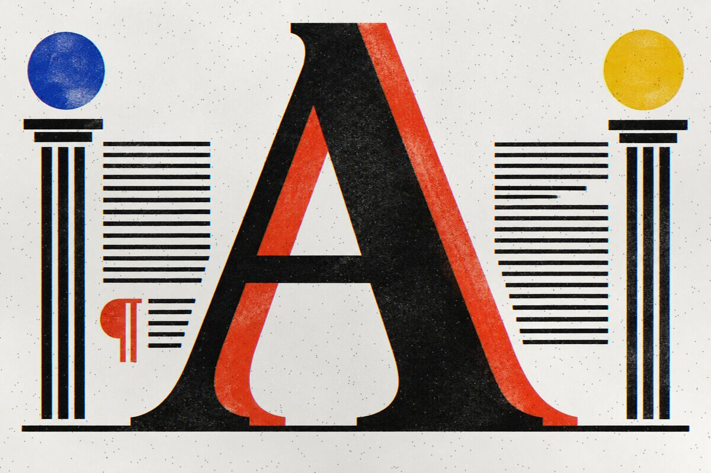

Newspapers still set headlines in serif faces for a reason. The modern twist is not the serif itself, it is what you pair it with.
A serif headline carries history: it reads as considered, editorial, finished. But the move in contemporary editorial design is contrast. One loud display face for the voice of the page, one quiet reading face for the story. Two typefaces, never three. Give the display face the emotional jobs, headlines and stamps. Give the reading face everything a reader settles into.
Filed from Practical Typography, Matthew Butterick ↗